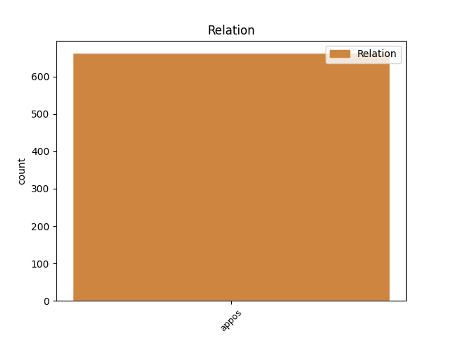
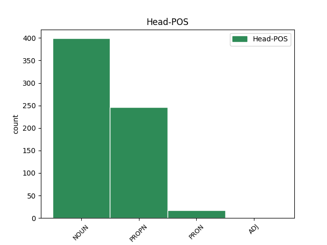
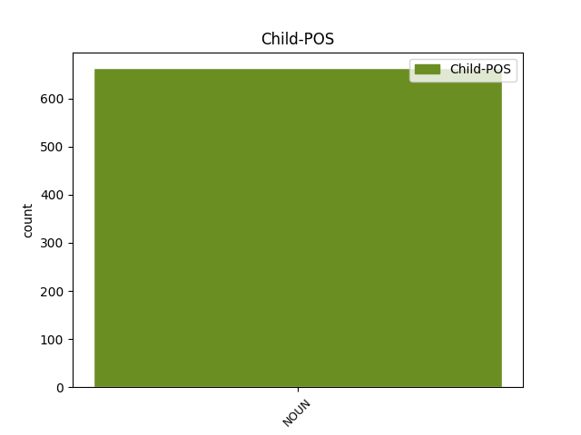

Distribution of features within this leaf



Agreement Rules sorted by frequency.
- When the dependent token is the appositional modifier(appos) of the head token, and the head token is NOUN and the dependent token is NOUN.
1 26 _ _ _ _ 0 _ _ _
2 Na _ _ _ _ 0 _ _ _
3 podstawie _ _ _ _ 0 _ _ _
4 sprawozdania _ _ _ _ 0 _ _ _
5 sędziego sędzia NOUN subst:sg:gen:m1 Animacy=Hum|Case=Gen|Gender=Masc|Number=Sing 0 _ _ _
6 sprawozdawcy sprawozdawca NOUN subst:sg:gen:m1 Animacy=Hum|Case=Gen|Gender=Masc|Number=Sing 5 appos _ _
7 Sąd _ _ _ _ 0 _ _ _
8 ( _ _ _ _ 0 _ _ _
9 piąta _ _ _ _ 0 _ _ _
10 izba _ _ _ _ 0 _ _ _
11 ) _ _ _ _ 0 _ _ _
12 postanowił _ _ _ _ 0 _ _ _
13 otworzyć _ _ _ _ 0 _ _ _
14 procedurę _ _ _ _ 0 _ _ _
15 ustną _ _ _ _ 0 _ _ _
16 . _ _ _ _ 0 _ _ _
1 Jak _ _ _ _ 0 _ _ _
2 już _ _ _ _ 0 _ _ _
3 wszyscy _ _ _ _ 0 _ _ _
4 chyba _ _ _ _ 0 _ _ _
5 wiecie _ _ _ _ 0 _ _ _
6 , _ _ _ _ 0 _ _ _
7 jestem _ _ _ _ 0 _ _ _
8 Shane Shane PROPN subst:sg:nom:m1 Animacy=Hum|Case=Nom|Gender=Masc|Number=Sing 0 _ _ _
9 , _ _ _ _ 0 _ _ _
10 bratanek bratanek NOUN subst:sg:nom:m1 Animacy=Hum|Case=Nom|Gender=Masc|Number=Sing 8 appos _ _
11 Nate'a _ _ _ _ 0 _ _ _
12 . _ _ _ _ 0 _ _ _
1 Pamiętam _ _ _ _ 0 _ _ _
2 , _ _ _ _ 0 _ _ _
3 jakie _ _ _ _ 0 _ _ _
4 to _ _ _ _ 0 _ _ _
5 miało _ _ _ _ 0 _ _ _
6 znaczenie _ _ _ _ 0 _ _ _
7 dla _ _ _ _ 0 _ _ _
8 naszego _ _ _ _ 0 _ _ _
9 kraju _ _ _ _ 0 _ _ _
10 , _ _ _ _ 0 _ _ _
11 kiedy _ _ _ _ 0 _ _ _
12 prezydent _ _ _ _ 0 _ _ _
13 Francji _ _ _ _ 0 _ _ _
14 wbrew _ _ _ _ 0 _ _ _
15 życzeniu _ _ _ _ 0 _ _ _
16 rządu _ _ _ _ 0 _ _ _
17 zaprosił _ _ _ _ 0 _ _ _
18 nas my PRON ppron12:pl:acc:m1:pri Animacy=Hum|Case=Acc|Gender=Masc|Number=Plur|Person=1|PronType=Prs 0 _ _ _
19 – _ _ _ _ 0 _ _ _
20 opozycjonistów opozycjonista NOUN subst:pl:acc:m1 Animacy=Hum|Case=Acc|Gender=Masc|Number=Plur 18 appos _ _
21 – _ _ _ _ 0 _ _ _
22 do _ _ _ _ 0 _ _ _
23 udziału _ _ _ _ 0 _ _ _
24 w _ _ _ _ 0 _ _ _
25 roboczym _ _ _ _ 0 _ _ _
26 śniadaniu _ _ _ _ 0 _ _ _
27 w _ _ _ _ 0 _ _ _
28 trakcie _ _ _ _ 0 _ _ _
29 jego _ _ _ _ 0 _ _ _
30 wizyty _ _ _ _ 0 _ _ _
31 państwowej _ _ _ _ 0 _ _ _
32 . _ _ _ _ 0 _ _ _
1 Autorka _ _ _ _ 0 _ _ _
2 ( _ _ _ _ 0 _ _ _
3 z _ _ _ _ 0 _ _ _
4 wykształcenia _ _ _ _ 0 _ _ _
5 prawnik _ _ _ _ 0 _ _ _
6 ) _ _ _ _ 0 _ _ _
7 próbuje _ _ _ _ 0 _ _ _
8 za _ _ _ _ 0 _ _ _
9 pomocą _ _ _ _ 0 _ _ _
10 swoich _ _ _ _ 0 _ _ _
11 artykułów _ _ _ _ 0 _ _ _
12 dyskredytować _ _ _ _ 0 _ _ _
13 jeden jeden ADJ adj:sg:acc:m3:pos Animacy=Inan|Case=Acc|Degree=Pos|Gender=Masc|Number=Sing 0 _ _ _
14 z _ _ _ _ 0 _ _ _
15 modeli _ _ _ _ 0 _ _ _
16 działalności _ _ _ _ 0 _ _ _
17 ubezpieczeniowej _ _ _ _ 0 _ _ _
18 - _ _ _ _ 0 _ _ _
19 model model NOUN subst:sg:acc:m3 Animacy=Inan|Case=Acc|Gender=Masc|Number=Sing 13 appos _ _
20 direct _ _ _ _ 0 _ _ _
21 . _ _ _ _ 0 _ _ _
Disagree Examples:
1 Dzisiaj _ _ _ _ 0 _ _ _
2 , _ _ _ _ 0 _ _ _
3 po _ _ _ _ 0 _ _ _
4 tragicznych _ _ _ _ 0 _ _ _
5 doświadczeniach _ _ _ _ 0 _ _ _
6 z _ _ _ _ 0 _ _ _
7 lipca _ _ _ _ 0 _ _ _
8 , _ _ _ _ 0 _ _ _
9 dla _ _ _ _ 0 _ _ _
10 mieszkańców _ _ _ _ 0 _ _ _
11 Raciborza _ _ _ _ 0 _ _ _
12 słowa słowo NOUN subst:pl:nom:n:ncol Case=Nom|Gender=Neut|Number=Plur 0 _ _ _
13 " _ _ _ _ 0 _ _ _
14 powódź powódź NOUN subst:sg:nom:f Case=Nom|Gender=Fem|Number=Sing 12 appos _ SpaceAfter=No
15 " _ _ _ _ 0 _ _ _
16 , _ _ _ _ 0 _ _ _
17 " _ _ _ _ 0 _ _ _
18 alarm _ _ _ _ 0 _ _ _
19 " _ _ _ _ 0 _ _ _
20 , _ _ _ _ 0 _ _ _
21 " _ _ _ _ 0 _ _ _
22 ewakuacja _ _ _ _ 0 _ _ _
23 " _ _ _ _ 0 _ _ _
24 nabrały _ _ _ _ 0 _ _ _
25 zupełnie _ _ _ _ 0 _ _ _
26 innego _ _ _ _ 0 _ _ _
27 znaczenia _ _ _ _ 0 _ _ _
28 . _ _ _ _ 0 _ _ _
1 Zdewastowane _ _ _ _ 0 _ _ _
2 pawilony _ _ _ _ 0 _ _ _
3 Qufu _ _ _ _ 0 _ _ _
4 , _ _ _ _ 0 _ _ _
5 noszące _ _ _ _ 0 _ _ _
6 niegdyś _ _ _ _ 0 _ _ _
7 wyrafinowane _ _ _ _ 0 _ _ _
8 nazwy nazwa NOUN subst:pl:acc:f Case=Acc|Gender=Fem|Number=Plur 0 _ _ _
9 : _ _ _ _ 0 _ _ _
10 Sali sala NOUN subst:sg:gen:f Case=Gen|Gender=Fem|Number=Sing 8 appos _ _
11 Wielkiej _ _ _ _ 0 _ _ _
12 Doskonałości _ _ _ _ 0 _ _ _
13 , _ _ _ _ 0 _ _ _
14 Sali _ _ _ _ 0 _ _ _
15 Świętych _ _ _ _ 0 _ _ _
16 Dokumentów _ _ _ _ 0 _ _ _
17 , _ _ _ _ 0 _ _ _
18 nawiedzały _ _ _ _ 0 _ _ _
19 zjawy _ _ _ _ 0 _ _ _
20 . _ _ _ _ 0 _ _ _
1 Obie _ _ _ _ 0 _ _ _
2 największe _ _ _ _ 0 _ _ _
3 centrale centrala NOUN subst:pl:nom:f Case=Nom|Gender=Fem|Number=Plur 0 _ _ _
4 związkowe _ _ _ _ 0 _ _ _
5 , _ _ _ _ 0 _ _ _
6 " _ _ _ _ 0 _ _ _
7 Solidarność solidarność NOUN subst:sg:nom:f Case=Nom|Gender=Fem|Number=Sing 3 appos _ SpaceAfter=No
8 " _ _ _ _ 0 _ _ _
9 i _ _ _ _ 0 _ _ _
10 OPZZ _ _ _ _ 0 _ _ _
11 , _ _ _ _ 0 _ _ _
12 angażowały _ _ _ _ 0 _ _ _
13 się _ _ _ _ 0 _ _ _
14 w _ _ _ _ 0 _ _ _
15 politykę _ _ _ _ 0 _ _ _
16 - _ _ _ _ 0 _ _ _
17 związkowcy _ _ _ _ 0 _ _ _
18 zasiadali _ _ _ _ 0 _ _ _
19 w _ _ _ _ 0 _ _ _
20 Sejmie _ _ _ _ 0 _ _ _
21 i _ _ _ _ 0 _ _ _
22 pełnili _ _ _ _ 0 _ _ _
23 funkcje _ _ _ _ 0 _ _ _
24 państwowe _ _ _ _ 0 _ _ _
25 . _ _ _ _ 0 _ _ _
1 Oto _ _ _ _ 0 _ _ _
2 Epitafia epitafium NOUN subst:pl:nom:n:ncol Case=Nom|Gender=Neut|Number=Plur 0 _ _ _
3 , _ _ _ _ 0 _ _ _
4 objawienie objawić NOUN ger:sg:nom:n:perf:aff Aspect=Perf|Case=Nom|Gender=Neut|Number=Sing|Polarity=Pos|VerbForm=Vnoun 2 appos _ _
5 światu _ _ _ _ 0 _ _ _
6 niezgłębionej _ _ _ _ 0 _ _ _
7 tajemnicy _ _ _ _ 0 _ _ _
8 Narodzin _ _ _ _ 0 _ _ _
9 i _ _ _ _ 0 _ _ _
10 Śmierci _ _ _ _ 0 _ _ _
11 Jezusa _ _ _ _ 0 _ _ _
12 , _ _ _ _ 0 _ _ _
13 a _ _ _ _ 0 _ _ _
14 także _ _ _ _ 0 _ _ _
15 sensu _ _ _ _ 0 _ _ _
16 narodzin _ _ _ _ 0 _ _ _
17 i _ _ _ _ 0 _ _ _
18 śmierci _ _ _ _ 0 _ _ _
19 każdego _ _ _ _ 0 _ _ _
20 z _ _ _ _ 0 _ _ _
21 nas _ _ _ _ 0 _ _ _
22 . _ _ _ _ 0 _ _ _
1 W _ _ _ _ 0 _ _ _
2 szopienickich _ _ _ _ 0 _ _ _
3 hutach _ _ _ _ 0 _ _ _
4 wytapia _ _ _ _ 0 _ _ _
5 cenne _ _ _ _ 0 _ _ _
6 metale metal NOUN subst:pl:acc:m3 Animacy=Inan|Case=Acc|Gender=Masc|Number=Plur 0 _ _ _
7 - _ _ _ _ 0 _ _ _
8 cynk cynk NOUN subst:sg:acc:m3 Animacy=Inan|Case=Acc|Gender=Masc|Number=Sing 6 appos _ SpaceAfter=No
9 , _ _ _ _ 0 _ _ _
10 ołów _ _ _ _ 0 _ _ _
11 , _ _ _ _ 0 _ _ _
12 kadm _ _ _ _ 0 _ _ _
13 i _ _ _ _ 0 _ _ _
14 srebro _ _ _ _ 0 _ _ _
15 . _ _ _ _ 0 _ _ _